- After this chapter, you will be able to:
- Discuss both functional and structural classifications for body joints
- Describe the characteristic features for fibrous, cartilaginous, and synovial joints and give examples of each
- Define and identify the different body movements
- Discuss the structure of specific body joints and the movements allowed by each
- Explain the development of body joints
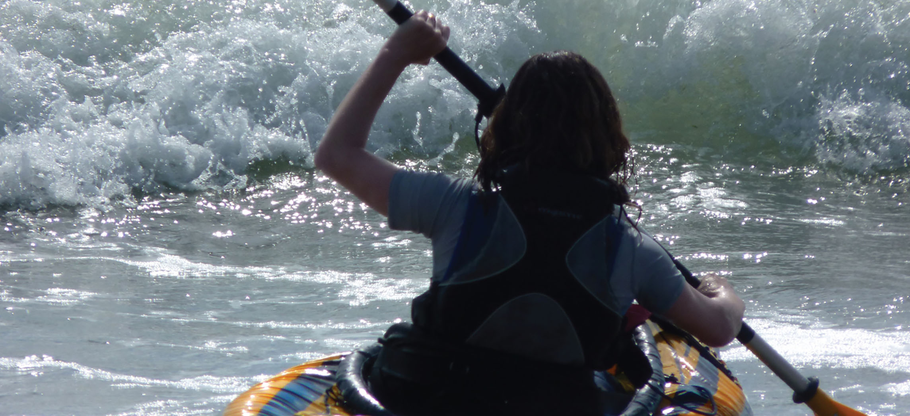
- Distinguish between the functional and structural classifications for joints
- Describe the three functional types of joints and give an example of each
- List the three types of diarthrodial joints
Ajoint, also called anarticulation, is any place where adjacent bones or bone and cartilage come together (articulate with each other) to form a connection. Joints are classified both structurally and functionally. Structural classifications of joints take into account whether the adjacent bones are strongly anchored to each other by fibrous connective tissue or cartilage, or whether the adjacent bones articulate with each other within a fluid-filled space called ajoint cavity. Functional classifications describe the degree of movement available between the bones, ranging from immobile, to slightly mobile, to freely moveable joints. The amount of movement available at a particular joint of the body is related to the functional requirements for that joint. Thus immobile or slightly moveable joints serve to protect internal organs, give stability to the body, and allow for limited body movement. In contrast, freely moveable joints allow for much more extensive movements of the body and limbs.
The structural classification of joints is based on whether the articulating surfaces of the adjacent bones are directly connected by fibrous connective tissue or cartilage, or whether the articulating surfaces contact each other within a fluid-filled joint cavity. These differences serve to divide the joints of the body into three structural classifications. Afibrous jointis where the adjacent bones are united by fibrous connective tissue. At acartilaginous joint, the bones are joined by hyaline cartilage or fibrocartilage. At asynovial joint, the articulating surfaces of the bones are not directly connected, but instead come into contact with each other within a joint cavity that is filled with a lubricating fluid. Synovial joints allow for free movement between the bones and are the most common joints of the body.
The functional classification of joints is determined by the amount of mobility found between the adjacent bones. Joints are thus functionally classified as a synarthrosis or immobile joint, an amphiarthrosis or slightly moveable joint, or as a diarthrosis, which is a freely moveable joint (arthroun = “to fasten by a joint”). Depending on their location, fibrous joints may be functionally classified as a synarthrosis (immobile joint) or an amphiarthrosis (slightly mobile joint). Cartilaginous joints are also functionally classified as either a synarthrosis or an amphiarthrosis joint. All synovial joints are functionally classified as a diarthrosis joint.
An immobile or nearly immobile joint is called asynarthrosis. The immobile nature of these joints provide for a strong union between the articulating bones. This is important at locations where the bones provide protection for internal organs. Examples include sutures, the fibrous joints between the bones of the skull that surround and protect the brain (Figure \(\PageIndex{1}\)), and the manubriosternal joint, the cartilaginous joint that unites the manubrium and body of the sternum for protection of the heart.
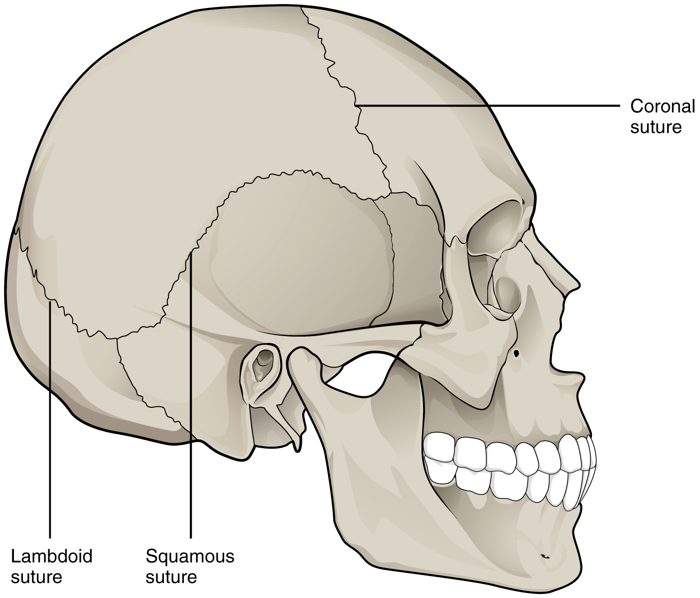
Anamphiarthrosisis a joint that has limited mobility. An example of this type of joint is the cartilaginous joint that unites the bodies of adjacent vertebrae. Filling the gap between the vertebrae is a thick pad of fibrocartilage called an intervertebral disc (Figure \(\PageIndex{2}\)). Each intervertebral disc strongly unites the vertebrae but still allows for a limited amount of movement between them. However, the small movements available between adjacent vertebrae can sum together along the length of the vertebral column to provide for large ranges of body movements.
Another example of an amphiarthrosis is the pubic symphysis of the pelvis. This is a cartilaginous joint in which the pubic regions of the right and left hip bones are strongly anchored to each other by fibrocartilage. This joint normally has very little mobility. The strength of the pubic symphysis is important in conferring weight-bearing stability to the pelvis.
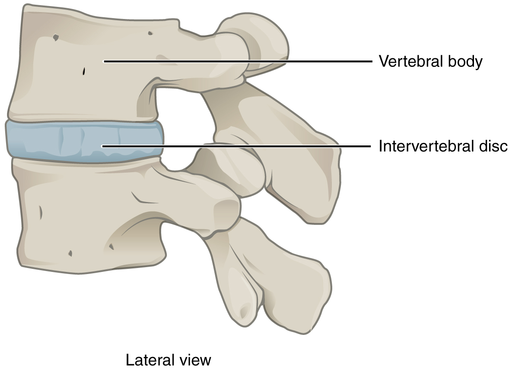
A freely mobile joint is classified as adiarthrosis. These types of joints include all synovial joints of the body, which provide the majority of body movements. Most diarthrotic joints are found in the appendicular skeleton and thus give the limbs a wide range of motion. These joints are divided into three categories, based on the number of axes of motion provided by each. An axis in anatomy is described as the movements in reference to the three anatomical planes: transverse, frontal, and sagittal. Thus, diarthroses are classified as uniaxial (for movement in one plane), biaxial (for movement in two planes), or multiaxial joints (for movement in all three anatomical planes).
Auniaxial jointonly allows for a motion in a single plane (around a single axis). The elbow joint, which only allows for bending or straightening, is an example of a uniaxial joint. Abiaxial jointallows for motions within two planes. An example of a biaxial joint is a metacarpophalangeal joint (knuckle joint) of the hand. The joint allows for movement along one axis to produce bending or straightening of the finger, and movement along a second axis, which allows for spreading of the fingers away from each other and bringing them together. A joint that allows for the several directions of movement is called amultiaxial joint(polyaxial or triaxial joint). This type of diarthrotic joint allows for movement along three axes (Figure \(\PageIndex{3}\)). The shoulder and hip joints are multiaxial joints. They allow the upper or lower limb to move in an anterior-posterior direction and a medial-lateral direction. In addition, the limb can also be rotated around its long axis. This third movement results in rotation of the limb so that its anterior surface is moved either toward or away from the midline of the body.
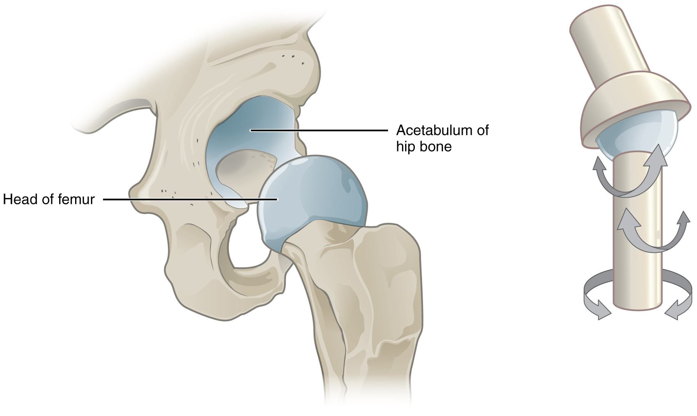
📖 OpenStax Anatomy & Physiology 2e, Section 9.2. openstax.org · CC BY 4.0
- Describe the structural features of fibrous joints
- Distinguish between a suture, syndesmosis, and gomphosis
- Give an example of each type of fibrous joint
At a fibrous joint, the adjacent bones are directly connected to each other by fibrous connective tissue, and thus the bones do not have a joint cavity between them (Figure \(\PageIndex{1}\) ). The gap between the bones may be narrow or wide. There are three types of fibrous joints. A suture is the narrow fibrous joint found between most bones of the skull. At a syndesmosis joint, the bones are more widely separated but are held together by a narrow band of fibrous connective tissue called aligamentor a wide sheet of connective tissue called an interosseous membrane. This type of fibrous joint is found between the shaft regions of the long bones in the forearm and in the leg. Lastly, a gomphosis is the narrow fibrous joint between the roots of a tooth and the bony socket in the jaw into which the tooth fits.
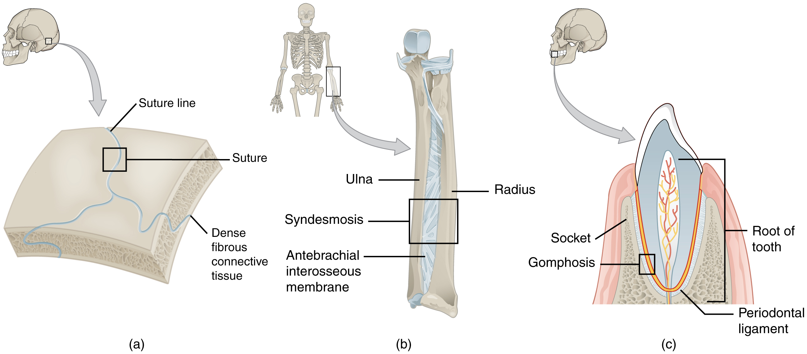
All the bones of the skull, except for the mandible, are joined to each other by a fibrous joint called asuture. The fibrous connective tissue found at a suture (“to bind or sew”) strongly unites the adjacent skull bones and thus helps to protect the brain and form the face. In adults, the skull bones are closely opposed and fibrous connective tissue fills the narrow gap between the bones. The suture is frequently convoluted, forming a tight union that prevents most movement between the bones. (See Figure 9.5a.) Thus, skull sutures are functionally classified as a synarthrosis, although some sutures may allow for slight movements between the cranial bones.
In newborns and infants, the areas of connective tissue between the bones are much wider, especially in those areas on the top and sides of the skull that will become the sagittal, coronal, squamous, and lambdoid sutures. These broad areas of connective tissue are calledfontanelles(Figure \(\PageIndex{2}\) ). During birth, the fontanelles provide flexibility to the skull, allowing the bones to push closer together or to overlap slightly, thus aiding movement of the infant’s head through the birth canal. After birth, these expanded regions of connective tissue allow for rapid growth of the skull and enlargement of the brain. The fontanelles greatly decrease in width during the first year after birth as the skull bones enlarge. When the connective tissue between the adjacent bones is reduced to a narrow layer, these fibrous joints are now called sutures. At some sutures, the connective tissue will ossify and be converted into bone, causing the adjacent bones to fuse to each other. This fusion between bones is called asynostosis(“joined by bone”). Examples of synostosis fusions between cranial bones are found both early and late in life. At the time of birth, the frontal and maxillary bones consist of right and left halves joined together by sutures, which disappear by the eighth year as the halves fuse together to form a single bone. Late in life, the sagittal, coronal, and lambdoid sutures of the skull will begin to ossify and fuse, causing the suture line to gradually disappear.
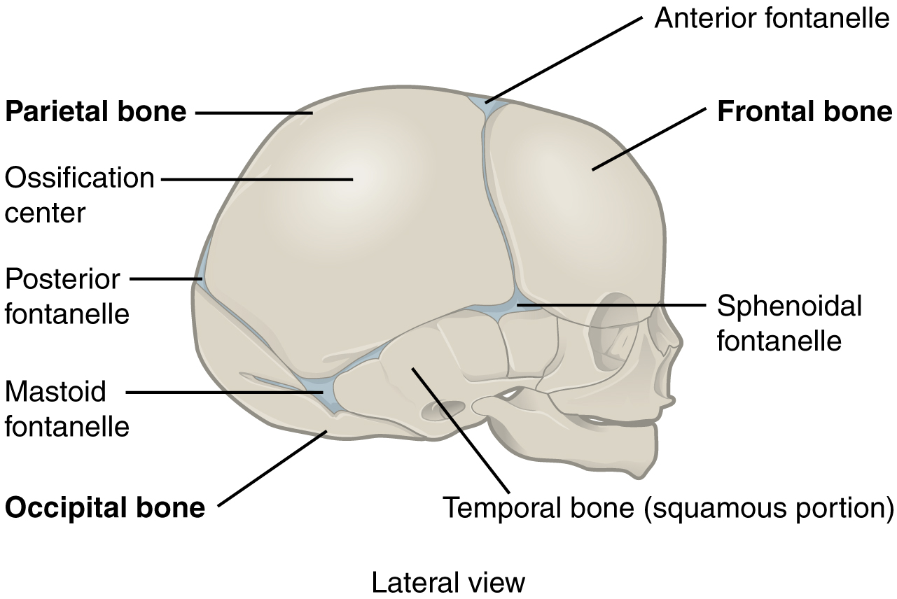
Asyndesmosis(“fastened with a band”) is a type of fibrous joint in which two parallel bones are united to each other by fibrous connective tissue. The gap between the bones may be narrow, with the bones joined by ligaments, or the gap may be wide and filled in by a broad sheet of connective tissue called aninterosseous membrane.
In the forearm, the wide gap between the shaft portions of the radius and ulna bones are strongly united by an interosseous membrane (see Figure \(\PageIndex{5}\)b). Similarly, in the leg, the shafts of the tibia and fibula are also united by an interosseous membrane. In addition, at the distal tibiofibular joint, the articulating surfaces of the bones lack cartilage and the narrow gap between the bones is anchored by fibrous connective tissue and ligaments on both the anterior and posterior aspects of the joint. Together, the interosseous membrane and these ligaments form the tibiofibular syndesmosis.
The syndesmoses found in the forearm and leg serve to unite parallel bones and prevent their separation. However, a syndesmosis does not prevent all movement between the bones, and thus this type of fibrous joint is functionally classified as an amphiarthrosis. In the leg, the syndesmosis between the tibia and fibula strongly unites the bones, allows for little movement, and firmly locks the talus bone in place between the tibia and fibula at the ankle joint. This provides strength and stability to the leg and ankle, which are important during weight bearing. In the forearm, the interosseous membrane is flexible enough to allow for rotation of the radius bone during forearm movements. Thus in contrast to the stability provided by the tibiofibular syndesmosis, the flexibility of the antebrachial interosseous membrane allows for the much greater mobility of the forearm.
The interosseous membranes of the leg and forearm also provide areas for muscle attachment. Damage to a syndesmotic joint, which usually results from a fracture of the bone with an accompanying tear of the interosseous membrane, will produce pain, loss of stability of the bones, and may damage the muscles attached to the interosseous membrane. If the fracture site is not properly immobilized with a cast or splint, contractile activity by these muscles can cause improper alignment of the broken bones during healing.
Agomphosis(“fastened with bolts”) is the specialized fibrous joint that anchors the root of a tooth into its bony socket within the maxillary bone (upper jaw) or mandible bone (lower jaw) of the skull. A gomphosis is also known as a peg-and-socket joint. Spanning between the bony walls of the socket and the root of the tooth are numerous short bands of dense connective tissue, each of which is called aperiodontal ligament(see Figure 9.5c). Due to the immobility of a gomphosis, this type of joint is functionally classified as a synarthrosis.
📖 OpenStax Anatomy & Physiology 2e, Section 9.3. openstax.org · CC BY 4.0
- Describe the structural features of cartilaginous joints
- Distinguish between a synchondrosis and symphysis
- Give an example of each type of cartilaginous joint
As the name indicates, at a cartilaginous joint, the adjacent bones are united by cartilage, a tough but flexible type of connective tissue. These types of joints lack a joint cavity and involve bones that are joined together by either hyaline cartilage or fibrocartilage (Figure \(\PageIndex{1}\) ). There are two types of cartilaginous joints. A synchondrosis is a cartilaginous joint where the bones are joined by hyaline cartilage. Also classified as a synchondrosis are places where bone is united to a cartilage structure, such as between the anterior end of a rib and the costal cartilage of the thoracic cage. The second type of cartilaginous joint is a symphysis, where the bones are joined by fibrocartilage.
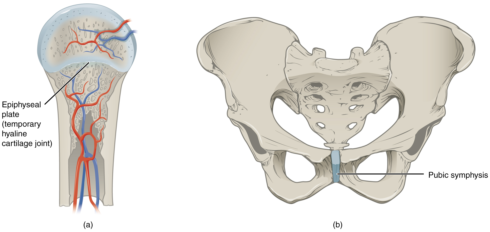
Asynchondrosis(“joined by cartilage”) is a cartilaginous joint where bones are joined together by hyaline cartilage, or where bone is united to hyaline cartilage. A synchondrosis may be temporary or permanent. A temporary synchondrosis is the epiphyseal plate (growth plate) of a growing long bone. The epiphyseal plate is the region of growing hyaline cartilage that unites the diaphysis (shaft) of the bone to the epiphysis (end of the bone). Bone lengthening involves growth of the epiphyseal plate cartilage and its replacement by bone, which adds to the diaphysis. For many years during childhood growth, the rates of cartilage growth and bone formation are equal and thus the epiphyseal plate does not change in overall thickness as the bone lengthens. During the late teens and early 20s, growth of the cartilage slows and eventually stops. The epiphyseal plate is then completely replaced by bone, and the diaphysis and epiphysis portions of the bone fuse together to form a single adult bone. This fusion of the diaphysis and epiphysis is a synostosis. Once this occurs, bone lengthening ceases. For this reason, the epiphyseal plate is considered to be a temporary synchondrosis. Because cartilage is softer than bone tissue, injury to a growing long bone can damage the epiphyseal plate cartilage, thus stopping bone growth and preventing additional bone lengthening.
Growing layers of cartilage also form synchondroses that join together the ilium, ischium, and pubic portions of the hip bone during childhood and adolescence. When body growth stops, the cartilage disappears and is replaced by bone, forming synostoses and fusing the bony components together into the single hip bone of the adult. Similarly, synostoses unite the sacral vertebrae that fuse together to form the adult sacrum.
Visit thiswebsiteto view a radiograph (X-ray image) of a child’s hand and wrist. The growing bones of child have an epiphyseal plate that forms a synchondrosis between the shaft and end of a long bone. Being less dense than bone, the area of epiphyseal cartilage is seen on this radiograph as the dark epiphyseal gaps located near the ends of the long bones, including the radius, ulna, metacarpal, and phalanx bones. Which of the bones in this image do not show an epiphyseal plate (epiphyseal gap)?
Examples of permanent synchondroses are found in the thoracic cage. One example is the first sternocostal joint, where the first rib is anchored to the manubrium by its costal cartilage. (The articulations of the remaining costal cartilages to the sternum are all synovial joints.) Additional synchondroses are formed where the anterior end of the other 11 ribs is joined to its costal cartilage. Unlike the temporary synchondroses of the epiphyseal plate, these permanent synchondroses retain their hyaline cartilage and thus do not ossify with age. Due to the lack of movement between the bone and cartilage, both temporary and permanent synchondroses are functionally classified as a synarthrosis.
A cartilaginous joint where the bones are joined by fibrocartilage is called asymphysis(“growing together”). Fibrocartilage is very strong because it contains numerous bundles of thick collagen fibers, thus giving it a much greater ability to resist pulling and bending forces when compared with hyaline cartilage. This gives symphyses the ability to strongly unite the adjacent bones, but can still allow for limited movement to occur. Thus, a symphysis is functionally classified as an amphiarthrosis.
The gap separating the bones at a symphysis may be narrow or wide. Examples in which the gap between the bones is narrow include the pubic symphysis and the manubriosternal joint. At the pubic symphysis, the pubic portions of the right and left hip bones of the pelvis are joined together by fibrocartilage across a narrow gap. Similarly, at the manubriosternal joint, fibrocartilage unites the manubrium and body portions of the sternum.
The intervertebral symphysis is a wide symphysis located between the bodies of adjacent vertebrae of the vertebral column. Here a thick pad of fibrocartilage called an intervertebral disc strongly unites the adjacent vertebrae by filling the gap between them. The width of the intervertebral symphysis is important because it allows for small movements between the adjacent vertebrae. In addition, the thick intervertebral disc provides cushioning between the vertebrae, which is important when carrying heavy objects or during high-impact activities such as running or jumping.
📖 OpenStax Anatomy & Physiology 2e, Section 9.4. openstax.org · CC BY 4.0
- Describe the structural features of a synovial joint
- Discuss the function of additional structures associated with synovial joints
- List the six types of synovial joints and give an example of each
Synovial joints are the most common type of joint in the body (Figure \(\PageIndex{1}\) ). A key structural characteristic for a synovial joint that is not seen at fibrous or cartilaginous joints is the presence of a joint cavity. This fluid-filled space is the site at which the articulating surfaces of the bones contact each other. Also unlike fibrous or cartilaginous joints, the articulating bone surfaces at a synovial joint are not directly connected to each other with fibrous connective tissue or cartilage. This gives the bones of a synovial joint the ability to move smoothly against each other, allowing for increased joint mobility.
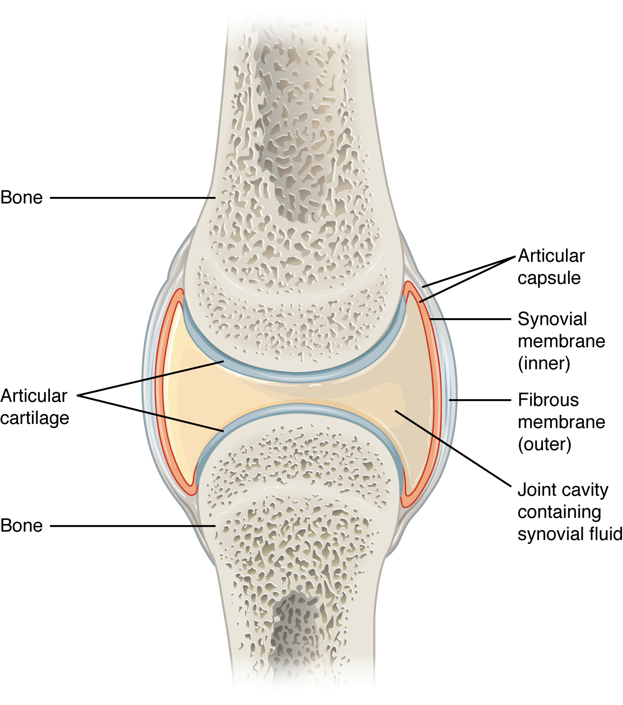
Synovial joints are characterized by the presence of a joint cavity. The walls of this space are formed by thearticular capsule, a fibrous connective tissue structure that is attached to each bone just outside the area of the bone’s articulating surface. The bones of the joint articulate with each other within the joint cavity.
Friction between the bones at a synovial joint is prevented by the presence of thearticular cartilage, a thin layer of hyaline cartilage that covers the entire articulating surface of each bone. However, unlike at a cartilaginous joint, the articular cartilages of each bone are not continuous with each other. Instead, the articular cartilage acts like a Teflon®coating over the bone surface, allowing the articulating bones to move smoothly against each other without damaging the underlying bone tissue. Lining the inner surface of the articular capsule is a thinsynovial membrane. The cells of this membrane secretesynovial fluid(synovia = “a thick fluid”), a thick, slimy fluid that provides lubrication to further reduce friction between the bones of the joint. This fluid also provides nourishment to the articular cartilage, which does not contain blood vessels. The ability of the bones to move smoothly against each other within the joint cavity, and the freedom of joint movement this provides, means that each synovial joint is functionally classified as a diarthrosis.
Outside of their articulating surfaces, the bones are connected together by ligaments, which are strong bands of fibrous connective tissue. These strengthen and support the joint by anchoring the bones together and preventing their separation. Ligaments allow for normal movements at a joint, but limit the range of these motions, thus preventing excessive or abnormal joint movements. Ligaments are classified based on their relationship to the fibrous articular capsule. Anextrinsic ligamentis located outside of the articular capsule, anintrinsic ligamentis fused to or incorporated into the wall of the articular capsule, and anintracapsular ligamentis located inside of the articular capsule.
At many synovial joints, additional support is provided by the muscles and their tendons that act across the joint. Atendonis the dense connective tissue structure that attaches a muscle to bone. As forces acting on a joint increase, the body will automatically increase the overall strength of contraction of the muscles crossing that joint, thus allowing the muscle and its tendon to serve as a “dynamic ligament” to resist forces and support the joint. This type of indirect support by muscles is very important at the shoulder joint, for example, where the ligaments are relatively weak.
A few synovial joints of the body have a fibrocartilage structure located between the articulating bones. This is called anarticular disc, which is generally small and oval-shaped, or ameniscus, which is larger and C-shaped. These structures can serve several functions, depending on the specific joint. In some places, an articular disc may act to strongly unite the bones of the joint to each other. Examples of this include the articular discs found at the sternoclavicular joint or between the distal ends of the radius and ulna bones. At other synovial joints, the disc can provide shock absorption and cushioning between the bones, which is the function of each meniscus within the knee joint. Finally, an articular disc can serve to smooth the movements between the articulating bones, as seen at the temporomandibular joint. Some synovial joints also have a fat pad, which can serve as a cushion between the bones.
Additional structures located outside of a synovial joint serve to prevent friction between the bones of the joint and the overlying muscle tendons or skin. Abursa(plural = bursae) is a thin connective tissue sac filled with lubricating liquid. They are located in regions where skin, ligaments, muscles, or muscle tendons can rub against each other, usually near a body joint (Figure \(\PageIndex{2}\)). Bursae reduce friction by separating the adjacent structures, preventing them from rubbing directly against each other. Bursae are classified by their location. Asubcutaneous bursais located between the skin and an underlying bone. It allows skin to move smoothly over the bone. Examples include the prepatellar bursa located over the kneecap and the olecranon bursa at the tip of the elbow. Asubmuscular bursais found between a muscle and an underlying bone, or between adjacent muscles. These prevent rubbing of the muscle during movements. A large submuscular bursa, the trochanteric bursa, is found at the lateral hip, between the greater trochanter of the femur and the overlying gluteus maximus muscle. Asubtendinous bursais found between a tendon and a bone. Examples include the subacromial bursa that protects the tendon of shoulder muscle as it passes under the acromion of the scapula, and the suprapatellar bursa that separates the tendon of the large anterior thigh muscle from the distal femur just above the knee.
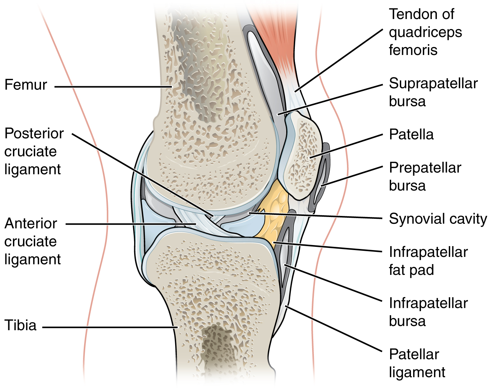
Atendon sheathis similar in structure to a bursa, but smaller. It is a connective tissue sac that surrounds a muscle tendon at places where the tendon crosses a joint. It contains a lubricating fluid that allows for smooth motions of the tendon during muscle contraction and joint movements.
Bursitis is the inflammation of a bursa near a joint. This will cause pain, swelling, or tenderness of the bursa and surrounding area, and may also result in joint stiffness. Bursitis is most commonly associated with the bursae found at or near the shoulder, hip, knee, or elbow joints. At the shoulder, subacromial bursitis may occur in the bursa that separates the acromion of the scapula from the tendon of a shoulder muscle as it passes deep to the acromion. In the hip region, trochanteric bursitis can occur in the bursa that overlies the greater trochanter of the femur, just below the lateral side of the hip. Ischial bursitis occurs in the bursa that separates the skin from the ischial tuberosity of the pelvis, the bony structure that is weight bearing when sitting. At the knee, inflammation and swelling of the bursa located between the skin and patella bone is prepatellar bursitis (“housemaid’s knee”), a condition more commonly seen today in roofers or floor and carpet installers who do not use knee pads. At the elbow, olecranon bursitis is inflammation of the bursa between the skin and olecranon process of the ulna. The olecranon forms the bony tip of the elbow, and bursitis here is also known as “student’s elbow.”
Bursitis can be either acute (lasting only a few days) or chronic. It can arise from muscle overuse, trauma, excessive or prolonged pressure on the skin, rheumatoid arthritis, gout, or infection of the joint. Repeated acute episodes of bursitis can result in a chronic condition. Treatments for the disorder include antibiotics if the bursitis is caused by an infection, or anti-inflammatory agents, such as nonsteroidal anti-inflammatory drugs (NSAIDs) or corticosteroids if the bursitis is due to trauma or overuse. Chronic bursitis may require that fluid be drained, but additional surgery is usually not required.
Synovial joints are subdivided based on the shapes of the articulating surfaces of the bones that form each joint. The six types of synovial joints are pivot, hinge, condyloid, saddle, plane, and ball-and socket-joints (Figure 9. \(\PageIndex{3}\) ).
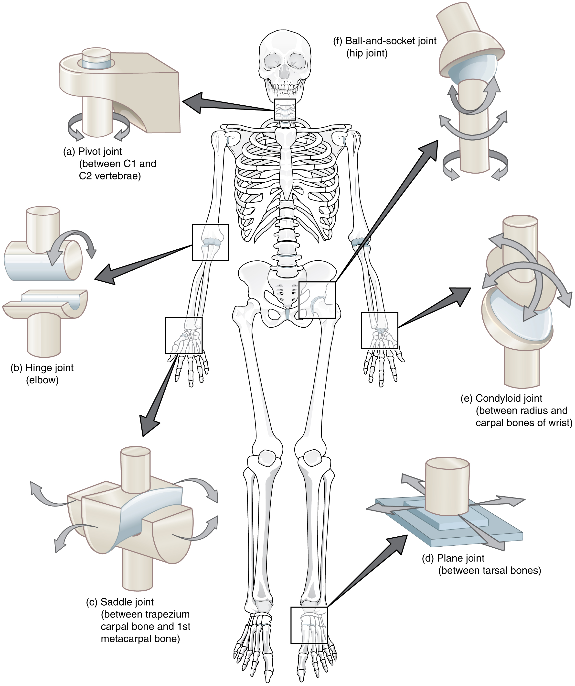
At apivot joint, a rounded portion of a bone is enclosed within a ring formed partially by the articulation with another bone and partially by a ligament (see Figure \(\PageIndex{3}\)a). The bone rotates within this ring. Since the rotation is around a single axis, pivot joints are functionally classified as a uniaxial diarthrosis type of joint. An example of a pivot joint is the atlantoaxial joint, found between the C1 (atlas) and C2 (axis) vertebrae. Here, the upward projecting dens of the axis articulates with the inner aspect of the atlas, where it is held in place by a ligament. Rotation at this joint allows you to turn your head from side to side. A second pivot joint is found at theproximal radioulnar joint. Here, the head of the radius is largely encircled by a ligament that holds it in place as it articulates with the radial notch of the ulna. Rotation of the radius allows for forearm movements.
In ahinge joint, the convex end of one bone articulates with the concave end of the adjoining bone (see Figure 9. \(\PageIndex{3}\)b). This type of joint allows only for bending and straightening motions along a single axis, and thus hinge joints are functionally classified as uniaxial joints. A good example is the elbow joint, with the articulation between the trochlea of the humerus and the trochlear notch of the ulna. Other hinge joints of the body include the knee, ankle, and interphalangeal joints between the phalanx bones of the fingers and toes.
At acondyloid joint(ellipsoid joint), the shallow depression at the end of one bone articulates with a rounded structure from an adjacent bone or bones (see Figure \(\PageIndex{3}\)e). The knuckle (metacarpophalangeal) joints of the hand between the distal end of a metacarpal bone and the proximal phalanx bone are condyloid joints. Another example is the radiocarpal joint of the wrist, between the shallow depression at the distal end of the radius bone and the rounded scaphoid, lunate, and triquetrum carpal bones. In this case, the articulation area has a more oval (elliptical) shape. Functionally, condyloid joints are biaxial joints that allow for two planes of movement. One movement involves the bending and straightening of the fingers or the anterior-posterior movements of the hand. The second movement is a side-to-side movement, which allows you to spread your fingers apart and bring them together, or to move your hand in a medial-going or lateral-going direction.
At asaddle joint, both of the articulating surfaces for the bones have a saddle shape, which is concave in one direction and convex in the other (see Figure \(\PageIndex{3}\)c). This allows the two bones to fit together like a rider sitting on a saddle. Saddle joints are functionally classified as biaxial joints. The primary example is the first carpometacarpal joint, between the trapezium (a carpal bone) and the first metacarpal bone at the base of the thumb. This joint provides the thumb the ability to move away from the palm of the hand along two planes. Thus, the thumb can move within the same plane as the palm of the hand, or it can jut out anteriorly, perpendicular to the palm. This movement of the first carpometacarpal joint is what gives humans their distinctive “opposable” thumbs. The sternoclavicular joint is also classified as a saddle joint.
At aplane joint(gliding joint), the articulating surfaces of the bones are flat or slightly curved and of approximately the same size, which allows the bones to slide against each other (see Figure \(\PageIndex{3}\)d). The motion at this type of joint is usually small and tightly constrained by surrounding ligaments. Based only on their shape, plane joints can allow multiple movements, including rotation. Thus plane joints can be functionally classified as a multiaxial joint. However, not all of these movements are available to every plane joint due to limitations placed on it by ligaments or neighboring bones. Thus, depending upon the specific joint of the body, a plane joint may exhibit only a single type of movement or several movements. Plane joints are found between the carpal bones (intercarpal joints) of the wrist or tarsal bones (intertarsal joints) of the foot, between the clavicle and acromion of the scapula (acromioclavicular joint), and between the superior and inferior articular processes of adjacent vertebrae (zygapophysial joints).
#### Ball-and-Socket Joint
The joint with the greatest range of motion is theball-and-socket joint. At these joints, the rounded head of one bone (the ball) fits into the concave articulation (the socket) of the adjacent bone (see Figure \(\PageIndex{3}\)f). The hip joint and the glenohumeral (shoulder) joint are the only ball-and-socket joints of the body. At the hip joint, the head of the femur articulates with the acetabulum of the hip bone, and at the shoulder joint, the head of the humerus articulates with the glenoid cavity of the scapula.
Ball-and-socket joints are classified functionally as multiaxial joints. The femur and the humerus are able to move in both anterior-posterior and medial-lateral directions and they can also rotate around their long axis. The shallow socket formed by the glenoid cavity allows the shoulder joint an extensive range of motion. In contrast, the deep socket of the acetabulum and the strong supporting ligaments of the hip joint serve to constrain movements of the femur, reflecting the need for stability and weight-bearing ability at the hip.
Watch this video to see an animation of synovial joints in action. Synovial joints are places where bones articulate with each other inside of a joint cavity. The different types of synovial joints are the ball-and-socket joint (shoulder joint), hinge joint (knee), pivot joint (atlantoaxial joint, between C1 and C2 vertebrae of the neck), condyloid joint (radiocarpal joint of the wrist), saddle joint (first carpometacarpal joint, between the trapezium carpal bone and the first metacarpal bone, at the base of the thumb), and plane joint (facet joints of vertebral column, between superior and inferior articular processes). Which type of synovial joint allows for the widest range of motion?
Arthritis is a common disorder of synovial joints that involves inflammation of the joint. This often results in significant joint pain, along with swelling, stiffness, and reduced joint mobility. There are more than 100 different forms of arthritis. Arthritis may arise from aging, damage to the articular cartilage, autoimmune diseases, bacterial or viral infections, or unknown (probably genetic) causes.
The most common type of arthritis is osteoarthritis, which is associated with aging and “wear and tear” of the articular cartilage (Figure \(\PageIndex{4}\)). Risk factors that may lead to osteoarthritis later in life include injury to a joint; jobs that involve physical labor; sports with running, twisting, or throwing actions; and being overweight. These factors put stress on the articular cartilage that covers the surfaces of bones at synovial joints, causing the cartilage to gradually become thinner. As the articular cartilage layer wears down, more pressure is placed on the bones. The joint responds by increasing production of the lubricating synovial fluid, but this can lead to swelling of the joint cavity, causing pain and joint stiffness as the articular capsule is stretched. The bone tissue underlying the damaged articular cartilage also responds by thickening, producing irregularities and causing the articulating surface of the bone to become rough or bumpy. Joint movement then results in pain and inflammation. In its early stages, symptoms of osteoarthritis may be reduced by mild activity that “warms up” the joint, but the symptoms may worsen following exercise. In individuals with more advanced osteoarthritis, the affected joints can become more painful and therefore are difficult to use effectively, resulting in increased immobility. There is no cure for osteoarthritis, but several treatments can help alleviate the pain. Treatments may include lifestyle changes, such as weight loss and low-impact exercise, and over-the-counter or prescription medications that help to alleviate the pain and inflammation. For severe cases, joint replacement surgery (arthroplasty) may be required.
Joint replacement is a very invasive procedure, so other treatments are always tried before surgery. However arthroplasty can provide relief from chronic pain and can enhance mobility within a few months following the surgery. This type of surgery involves replacing the articular surfaces of the bones with prosthesis (artificial components). For example, in hip arthroplasty, the worn or damaged parts of the hip joint, including the head and neck of the femur and the acetabulum of the pelvis, are removed and replaced with artificial joint components. The replacement head for the femur consists of a rounded ball attached to the end of a shaft that is inserted inside the diaphysis of the femur. The acetabulum of the pelvis is reshaped and a replacement socket is fitted into its place. The parts, which are always built in advance of the surgery, are sometimes custom made to produce the best possible fit for a patient.
Gout is a form of arthritis that results from the deposition of uric acid crystals within a body joint. Usually only one or a few joints are affected, such as the big toe, knee, or ankle. The attack may only last a few days, but may return to the same or another joint. Gout occurs when the body makes too much uric acid or the kidneys do not properly excrete it. A diet with excessive fructose has been implicated in raising the chances of a susceptible individual developing gout.
Other forms of arthritis are associated with various autoimmune diseases, bacterial infections of the joint, or unknown genetic causes. Autoimmune diseases, including rheumatoid arthritis, scleroderma, or systemic lupus erythematosus, produce arthritis because the immune system of the body attacks the body joints. In rheumatoid arthritis, the joint capsule and synovial membrane become inflamed. As the disease progresses, the articular cartilage is severely damaged or destroyed, resulting in joint deformation, loss of movement, and severe disability. The most commonly involved joints are the hands, feet, and cervical spine, with corresponding joints on both sides of the body usually affected, though not always to the same extent. Rheumatoid arthritis is also associated with lung fibrosis, vasculitis (inflammation of blood vessels), coronary heart disease, and premature mortality. With no known cure, treatments are aimed at alleviating symptoms. Exercise, anti-inflammatory and pain medications, various specific disease-modifying anti-rheumatic drugs, or surgery are used to treat rheumatoid arthritis.
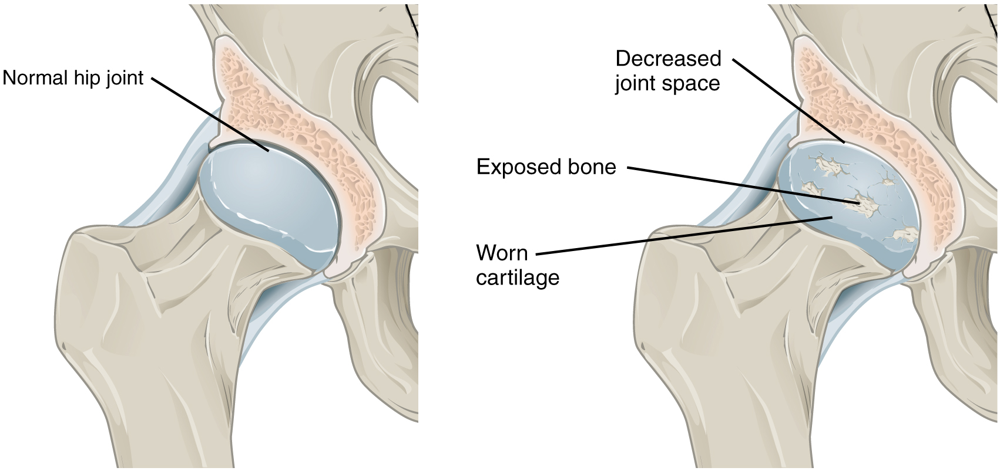
Watch thisanimationto observe hip replacement surgery (total hip arthroplasty), which can be used to alleviate the pain and loss of joint mobility associated with osteoarthritis of the hip joint. What is the most common cause of hip disability?
Watch this video to learn about the symptoms and treatments for rheumatoid arthritis. Which system of the body malfunctions in rheumatoid arthritis and what does this cause?
📖 OpenStax Anatomy & Physiology 2e, Section 9.5. openstax.org · CC BY 4.0
- Define the different types of body movements
- Identify the joints that allow for these motions
Synovial joints allow the body a tremendous range of movements. Each movement at a synovial joint results from the contraction or relaxation of the muscles that are attached to the bones on either side of the articulation. The type of movement that can be produced at a synovial joint is determined by its structural type. While the ball-and-socket joint gives the greatest range of movement at an individual joint, in other regions of the body, several joints may work together to produce a particular movement. Overall, each type of synovial joint is necessary to provide the body with its great flexibility and mobility. There are many types of movement that can occur at synovial joints (Table \(\PageIndex{1}\) ). Movement types are generally paired, with one being the opposite of the other. Body movements are always described in relation to the anatomical position of the body: upright stance, with upper limbs to the side of body and palms facing forward. Refer to Figure \(\PageIndex{1}\) as you go through this section.
Watch this video to learn about anatomical motions. What motions involve increasing or decreasing the angle of the foot at the ankle?
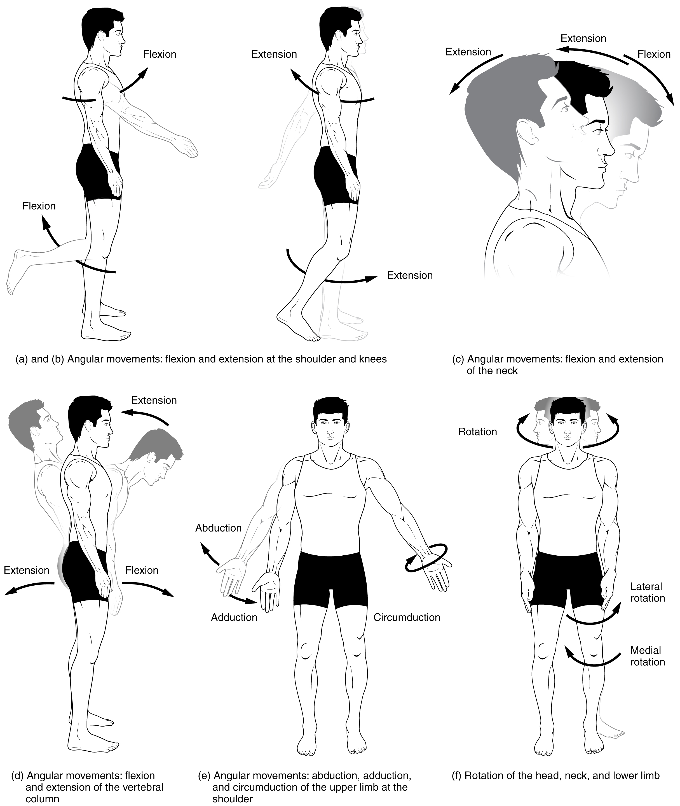
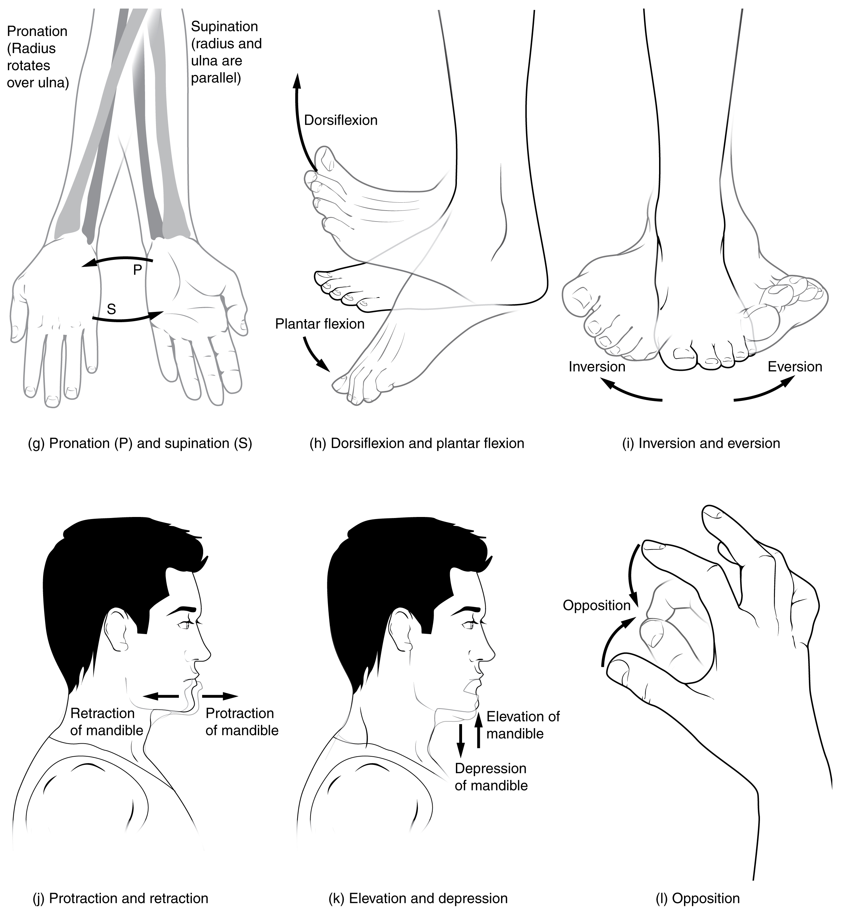
Flexionandextensionare typically movements that take place within the sagittal plane and involve anterior or posterior movements of the neck, trunk, or limbs. For the vertebral column, flexion (anterior flexion) is an anterior (forward) bending of the neck or trunk, while extension involves a posterior-directed motion, such as straightening from a flexed position or bending backward.Lateral flexionof the vertebral column occurs in the coronal plane and is defined as the bending of the neck or trunk toward the right or left side. These movements of the vertebral column involve both the symphysis joint formed by each intervertebral disc, as well as the plane type of synovial joint formed between the inferior articular processes of one vertebra and the superior articular processes of the next lower vertebra.
In the limbs, flexion decreases the angle between the bones (bending of the joint), while extension increases the angle and straightens the joint. For the upper limb, all anterior-going motions are flexion and all posterior-going motions are extension. These include anterior-posterior movements of the arm at the shoulder, the forearm at the elbow, the hand at the wrist, and the fingers at the metacarpophalangeal and interphalangeal joints. For the thumb, extension moves the thumb away from the palm of the hand, within the same plane as the palm, while flexion brings the thumb back against the index finger or into the palm. These motions take place at the first carpometacarpal joint. In the lower limb, bringing the thigh forward and upward is flexion at the hip joint, while any posterior-going motion of the thigh is extension. Note that extension of the thigh beyond the anatomical (standing) position is greatly limited by the ligaments that support the hip joint. Knee flexion is the bending of the knee to bring the foot toward the posterior thigh, and extension is the straightening of the knee. Flexion and extension movements are seen at the hinge, condyloid, saddle, and ball-and-socket joints of the limbs (see Figure \(\PageIndex{1}\)a-d).
Hyperextensionis the abnormal or excessive extension of a joint beyond its normal range of motion, thus resulting in injury. Similarly,hyperflexionis excessive flexion at a joint. Hyperextension injuries are common at hinge joints such as the knee or elbow. In cases of “whiplash” in which the head is suddenly moved backward and then forward, a patient may experience both hyperextension and hyperflexion of the cervical region.
Abductionandadductionmotions occur within the coronal plane and involve medial-lateral motions of the limbs, fingers, toes, or thumb. Abduction moves the limb laterally away from the midline of the body, while adduction is the opposing movement that brings the limb toward the body or across the midline. For example, abduction is raising the arm at the shoulder joint, moving it laterally away from the body, while adduction brings the arm down to the side of the body. Similarly, abduction and adduction at the wrist moves the hand away from or toward the midline of the body. Spreading the fingers or toes apart is also abduction, while bringing the fingers or toes together is adduction. For the thumb, abduction is the anterior movement that brings the thumb to a 90° perpendicular position, pointing straight out from the palm. Adduction moves the thumb back to the anatomical position, next to the index finger. Abduction and adduction movements are seen at condyloid, saddle, and ball-and-socket joints (see Figure \(\PageIndex{1}\)e).
Circumductionis the movement of a body region in a circular manner, in which one end of the body region being moved stays relatively stationary while the other end describes a circle. It involves the sequential combination of flexion, adduction, extension, and abduction at a joint. This type of motion is found at biaxial condyloid and saddle joints, and at multiaxial ball-and-sockets joints (see Figure \(\PageIndex{1}\)e).
Rotationcan occur within the vertebral column, at a pivot joint, or at a ball-and-socket joint. Rotation of the neck or body is the twisting movement produced by the summation of the small rotational movements available between adjacent vertebrae. At a pivot joint, one bone rotates in relation to another bone. This is a uniaxial joint, and thus rotation is the only motion allowed at a pivot joint. For example, at the atlantoaxial joint, the first cervical (C1) vertebra (atlas) rotates around the dens, the upward projection from the second cervical (C2) vertebra (axis). This allows the head to rotate from side to side as when shaking the head “no.” The proximal radioulnar joint is a pivot joint formed by the head of the radius and its articulation with the ulna. This joint allows for the radius to rotate along its length during pronation and supination movements of the forearm.
Rotation can also occur at the ball-and-socket joints of the shoulder and hip. Here, the humerus and femur rotate around their long axis, which moves the anterior surface of the arm or thigh either toward or away from the midline of the body. Movement that brings the anterior surface of the limb toward the midline of the body is calledmedial (internal) rotation. Conversely, rotation of the limb so that the anterior surface moves away from the midline islateral (external) rotation(see Figure \(\PageIndex{1}\)f). Be sure to distinguish medial and lateral rotation, which can only occur at the multiaxial shoulder and hip joints, from circumduction, which can occur at either biaxial or multiaxial joints.
Supination and pronation are movements of the forearm. In the anatomical position, the upper limb is held next to the body with the palm facing forward. This is thesupinated positionof the forearm. In this position, the radius and ulna are parallel to each other. When the palm of the hand faces backward, the forearm is in thepronated position, and the radius and ulna form an X-shape.
Supination and pronation are the movements of the forearm that go between these two positions.Pronationis the motion that moves the forearm from the supinated (anatomical) position to the pronated (palm backward) position. This motion is produced by rotation of the radius at the proximal radioulnar joint, accompanied by movement of the radius at the distal radioulnar joint. The proximal radioulnar joint is a pivot joint that allows for rotation of the head of the radius. Because of the slight curvature of the shaft of the radius, this rotation causes the distal end of the radius to cross over the distal ulna at the distal radioulnar joint. This crossing over brings the radius and ulna into an X-shape position.Supinationis the opposite motion, in which rotation of the radius returns the bones to their parallel positions and moves the palm to the anterior facing (supinated) position. It helps to remember that supination is the motion you use when scooping up soup with a spoon (see Figure \(\PageIndex{1}\)g).
Dorsiflexionandplantar flexionare movements at the ankle joint, which is a hinge joint. Lifting the front of the foot, so that the top of the foot moves toward the anterior leg is dorsiflexion, while lifting the heel of the foot from the ground or pointing the toes downward is plantar flexion. These are the only movements available at the ankle joint (see Figure \(\PageIndex{1}\)h).
Inversion and eversion are complex movements that involve the multiple plane joints among the tarsal bones of the posterior foot (intertarsal joints) and thus are not motions that take place at the ankle joint.Inversionis the turning of the foot to angle the bottom of the foot toward the midline, whileeversionturns the bottom of the foot away from the midline. The foot has a greater range of inversion than eversion motion. These are important motions that help to stabilize the foot when walking or running on an uneven surface and aid in the quick side-to-side changes in direction used during active sports such as basketball, racquetball, or soccer (see Figure \(\PageIndex{1}\)i).
Protractionandretractionare anterior-posterior movements of the scapula or mandible. Protraction of the scapula occurs when the shoulder is moved forward, as when pushing against something or throwing a ball. Retraction is the opposite motion, with the scapula being pulled posteriorly and medially, toward the vertebral column. For the mandible, protraction occurs when the lower jaw is pushed forward, to stick out the chin, while retraction pulls the lower jaw backward. (See Figure \(\PageIndex{1}\)j.)
Depressionandelevationare downward and upward movements of the scapula or mandible. The upward movement of the scapula and shoulder is elevation, while a downward movement is depression. These movements are used to shrug your shoulders. Similarly, elevation of the mandible is the upward movement of the lower jaw used to close the mouth or bite on something, and depression is the downward movement that produces opening of the mouth (see Figure \(\PageIndex{1}\)k).
Excursion is the side to side movement of the mandible.Lateral excursionmoves the mandible away from the midline, toward either the right or left side.Medial excursionreturns the mandible to its resting position at the midline.
Superior and inferior rotation are movements of the scapula and are defined by the direction of movement of the glenoid cavity. These motions involve rotation of the scapula around a point inferior to the scapular spine and are produced by combinations of muscles acting on the scapula. Duringsuperior rotation, the glenoid cavity moves upward as the medial end of the scapular spine moves downward. This is a very important motion that contributes to upper limb abduction. Without superior rotation of the scapula, the greater tubercle of the humerus would hit the acromion of the scapula, thus preventing any abduction of the arm above shoulder height. Superior rotation of the scapula is thus required for full abduction of the upper limb. Superior rotation is also used without arm abduction when carrying a heavy load with your hand or on your shoulder. You can feel this rotation when you pick up a load, such as a heavy book bag and carry it on only one shoulder. To increase its weight-bearing support for the bag, the shoulder lifts as the scapula superiorly rotates.Inferior rotationoccurs during limb adduction and involves the downward motion of the glenoid cavity with upward movement of the medial end of the scapular spine.
Oppositionis the thumb movement that brings the tip of the thumb in contact with the tip of a finger. This movement is produced at the first carpometacarpal joint, which is a saddle joint formed between the trapezium carpal bone and the first metacarpal bone. Thumb opposition is produced by a combination of flexion and abduction of the thumb at this joint. Returning the thumb to its anatomical position next to the index finger is calledreposition(see Figure \(\PageIndex{2}\) l).
| Type of Joint | Movement | Example |
|---|---|---|
| Pivot | Uniaxial joint; allows rotational movement | Atlantoaxial joint (C1–C2 vertebrae articulation); proximal radioulnar joint |
| Hinge | Uniaxial joint; allows flexion/extension movements | Knee; elbow; ankle; interphalangeal joints of fingers and toes |
| Condyloid | Biaxial joint; allows flexion/extension, abduction/adduction, and circumduction movements | Metacarpophalangeal (knuckle) joints of fingers; radiocarpal joint of wrist; metatarsophalangeal joints for toes |
| Saddle | Biaxial joint; allows flexion/extension, abduction/adduction, and circumduction movements | First carpometacarpal joint of the thumb; sternoclavicular joint |
| Plane | Multiaxial joint; allows inversion and eversion of foot, or flexion, extension, and lateral flexion of the vertebral column | Intertarsal joints of foot; superior-inferior articular process articulations between vertebrae |
| Ball-and-socket | Multiaxial joint; allows flexion/extension, abduction/adduction, circumduction, and medial/lateral rotation movements | Shoulder and hip joints |
📖 OpenStax Anatomy & Physiology 2e, Section 9.6. openstax.org · CC BY 4.0
- Describe the bones that articulate together to form selected synovial joints
- Discuss the movements available at each joint
- Describe the structures that support and prevent excess movements at each joint
Each synovial joint of the body is specialized to perform certain movements. The movements that are allowed are determined by the structural classification for each joint. For example, a multiaxial ball-and-socket joint has much more mobility than a uniaxial hinge joint. However, the ligaments and muscles that support a joint may place restrictions on the total range of motion available. Thus, the ball-and-socket joint of the shoulder has little in the way of ligament support, which gives the shoulder a very large range of motion. In contrast, movements at the hip joint are restricted by strong ligaments, which reduce its range of motion but confer stability during standing and weight bearing.
This section will examine the anatomy of selected synovial joints of the body. Anatomical names for most joints are derived from the names of the bones that articulate at that joint, although some joints, such as the elbow, hip, and knee joints are exceptions to this general naming scheme.
In addition to being held together by the intervertebral discs, adjacent vertebrae also articulate with each other at synovial joints formed between the superior and inferior articular processes calledzygapophysial joints(facet joints) (see Figure 9.3). These are plane joints that provide for only limited motions between the vertebrae. The orientation of the articular processes at these joints varies in different regions of the vertebral column and serves to determine the types of motions available in each vertebral region. The cervical and lumbar regions have the greatest ranges of motions.
In the neck, the articular processes of cervical vertebrae are flattened and generally face upward or downward. This orientation provides the cervical vertebral column with extensive ranges of motion for flexion, extension, lateral flexion, and rotation. In the thoracic region, the downward projecting and overlapping spinous processes, along with the attached thoracic cage, greatly limit flexion, extension, and lateral flexion. The lumbar region allows for considerable extension, flexion, and lateral flexion, but the orientation of the articular processes largely prohibits rotation.
The articulations formed between the skull, the atlas (C1 vertebra), and the axis (C2 vertebra) differ from the articulations in other vertebral areas and play important roles in movement of the head. Theatlanto-occipital jointis formed by the articulations between the superior articular processes of the atlas and the occipital condyles on the base of the skull. This articulation has a pronounced U-shaped curvature, oriented along the anterior-posterior axis. This allows the skull to rock forward and backward, producing flexion and extension of the head. This moves the head up and down, as when shaking your head “yes.”
Theatlantoaxial joint, between the atlas and axis, consists of three articulations. The paired superior articular processes of the axis articulate with the inferior articular processes of the atlas. These articulating surfaces are relatively flat and oriented horizontally. The third articulation is the pivot joint formed between the dens, which projects upward from the body of the axis, and the inner aspect of the anterior arch of the atlas (Figure \(\PageIndex{1}\) ). A strong ligament passes posterior to the dens to hold it in position against the anterior arch. These articulations allow the atlas to rotate on top of the axis, moving the head toward the right or left, as when shaking your head “no.”
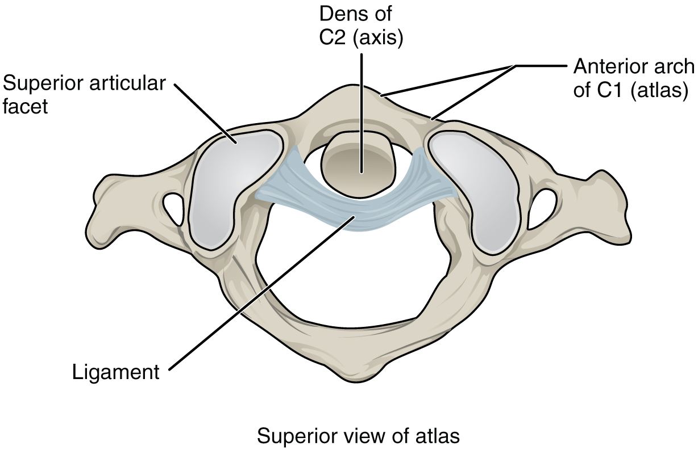
Thetemporomandibular joint (TMJ)is the joint that allows for opening (mandibular depression) and closing (mandibular elevation) of the mouth, as well as side-to-side and protraction/retraction motions of the lower jaw. This joint involves the articulation between the mandibular fossa and articular tubercle of the temporal bone, with the condyle (head) of the mandible. Located between these bony structures, filling the gap between the skull and mandible, is a flexible articular disc (Figure \(\PageIndex{2}\) ). This disc serves to smooth the movements between the temporal bone and mandibular condyle.
Movement at the TMJ during opening and closing of the mouth involves both gliding and hinge motions of the mandible. With the mouth closed, the mandibular condyle and articular disc are located within the mandibular fossa of the temporal bone. During opening of the mouth, the mandible hinges downward and at the same time is pulled anteriorly, causing both the condyle and the articular disc to glide forward from the mandibular fossa onto the downward projecting articular tubercle. The net result is a forward and downward motion of the condyle and mandibular depression. The temporomandibular joint is supported by an extrinsic ligament that anchors the mandible to the skull. This ligament spans the distance between the base of the skull and the lingula on the medial side of the mandibular ramus.
Dislocation of the TMJ may occur when opening the mouth too wide (such as when taking a large bite) or following a blow to the jaw, resulting in the mandibular condyle moving beyond (anterior to) the articular tubercle. In this case, the individual would not be able to close their mouth. Temporomandibular joint disorder is a painful condition that may arise due to arthritis, wearing of the articular cartilage covering the bony surfaces of the joint, muscle fatigue from overuse or grinding of the teeth, damage to the articular disc within the joint, or jaw injury. Temporomandibular joint disorders can also cause headache, difficulty chewing, or even the inability to move the jaw (lock jaw). Pharmacologic agents for pain or other therapies, including bite guards, are used as treatments.
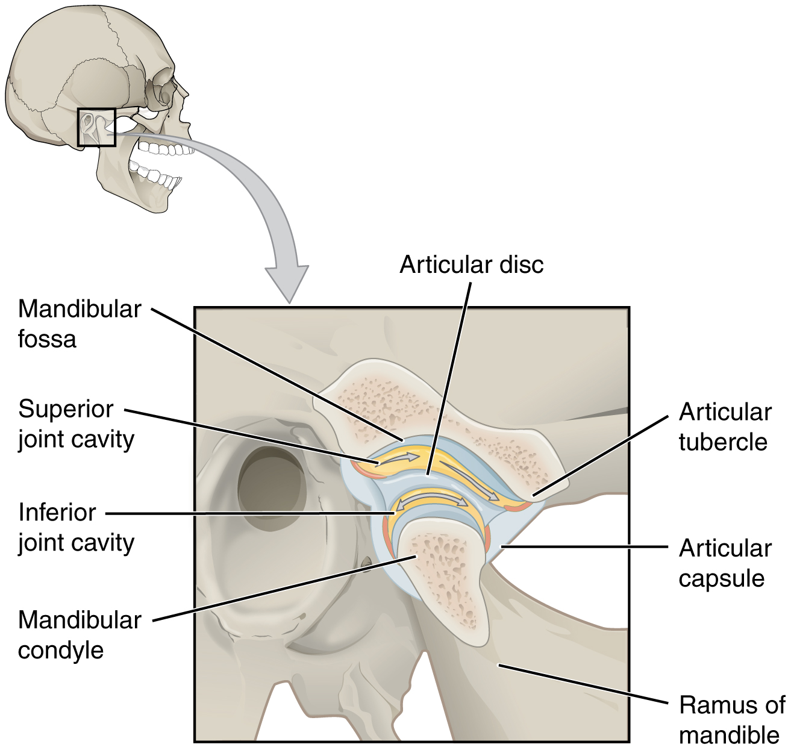
Watch this video to learn about TMJ. Opening of the mouth requires the combination of two motions at the temporomandibular joint, an anterior gliding motion of the articular disc and mandible and the downward hinging of the mandible. What is the initial movement of the mandible during opening and how much mouth opening does this produce?
The shoulder joint is called theglenohumeral joint. This is a ball-and-socket joint formed by the articulation between the head of the humerus and the glenoid cavity of the scapula (Figure \(\PageIndex{3}\) ). This joint has the largest range of motion of any joint in the body. However, this freedom of movement is due to the lack of structural support and thus the enhanced mobility is offset by a loss of stability.
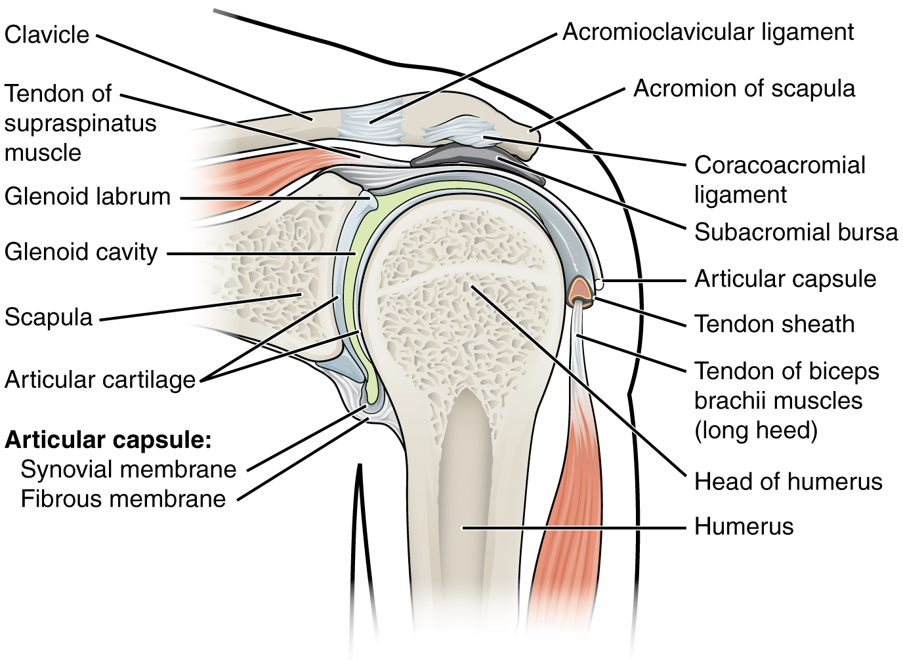
The large range of motions at the shoulder joint is provided by the articulation of the large, rounded humeral head with the small and shallow glenoid cavity, which is only about one third of the size of the humeral head. The socket formed by the glenoid cavity is deepened slightly by a small lip of fibrocartilage called theglenoid labrum, which extends around the outer margin of the cavity. The articular capsule that surrounds the glenohumeral joint is relatively thin and loose to allow for large motions of the upper limb. Some structural support for the joint is provided by thickenings of the articular capsule wall that form weak intrinsic ligaments. These include thecoracohumeral ligament, running from the coracoid process of the scapula to the anterior humerus, and three ligaments, each called aglenohumeral ligament, located on the anterior side of the articular capsule. These ligaments help to strengthen the superior and anterior capsule walls.
However, the primary support for the shoulder joint is provided by muscles crossing the joint, particularly the four rotator cuff muscles. These muscles (supraspinatus, infraspinatus, teres minor, and subscapularis) arise from the scapula and attach to the greater or lesser tubercles of the humerus. As these muscles cross the shoulder joint, their tendons encircle the head of the humerus and become fused to the anterior, superior, and posterior walls of the articular capsule. The thickening of the capsule formed by the fusion of these four muscle tendons is called therotator cuff. Two bursae, thesubacromial bursaand thesubscapular bursa, help to prevent friction between the rotator cuff muscle tendons and the scapula as these tendons cross the glenohumeral joint. In addition to their individual actions of moving the upper limb, the rotator cuff muscles also serve to hold the head of the humerus in position within the glenoid cavity. By constantly adjusting their strength of contraction to resist forces acting on the shoulder, these muscles serve as “dynamic ligaments” and thus provide the primary structural support for the glenohumeral joint.
Injuries to the shoulder joint are common. Repetitive use of the upper limb, particularly in abduction such as during throwing, swimming, or racquet sports, may lead to acute or chronic inflammation of the bursa or muscle tendons, a tear of the glenoid labrum, or degeneration or tears of the rotator cuff. Because the humeral head is strongly supported by muscles and ligaments around its anterior, superior, and posterior aspects, most dislocations of the humerus occur in an inferior direction. This can occur when force is applied to the humerus when the upper limb is fully abducted, as when diving to catch a baseball and landing on your hand or elbow. Inflammatory responses to any shoulder injury can lead to the formation of scar tissue between the articular capsule and surrounding structures, thus reducing shoulder mobility, a condition called adhesive capsulitis (“frozen shoulder”).
Watch this video for a tutorial on the anatomy of the shoulder joint. What movements are available at the shoulder joint?
Watch this video to learn more about the anatomy of the shoulder joint, including bones, joints, muscles, nerves, and blood vessels. What is the shape of the glenoid labrum in cross-section, and what is the importance of this shape?
Theelbow jointis a uniaxial hinge joint formed by thehumeroulnar joint, the articulation between the trochlea of the humerus and the trochlear notch of the ulna. Also associated with the elbow are thehumeroradial jointand the proximal radioulnar joint. All three of these joints are enclosed within a single articular capsule (Figure \(\PageIndex{4}\) ).
The articular capsule of the elbow is thin on its anterior and posterior aspects, but is thickened along its outside margins by strong intrinsic ligaments. These ligaments prevent side-to-side movements and hyperextension. On the medial side is the triangularulnar collateral ligament. This arises from the medial epicondyle of the humerus and attaches to the medial side of the proximal ulna. The strongest part of this ligament is the anterior portion, which resists hyperextension of the elbow. The ulnar collateral ligament may be injured by frequent, forceful extensions of the forearm, as is seen in baseball pitchers. Reconstructive surgical repair of this ligament is referred to as Tommy John surgery, named for the former major league pitcher who was the first person to have this treatment.
The lateral side of the elbow is supported by theradial collateral ligament. This arises from the lateral epicondyle of the humerus and then blends into the lateral side of the annular ligament. Theannular ligamentencircles the head of the radius. This ligament supports the head of the radius as it articulates with the radial notch of the ulna at the proximal radioulnar joint. This is a pivot joint that allows for rotation of the radius during supination and pronation of the forearm.
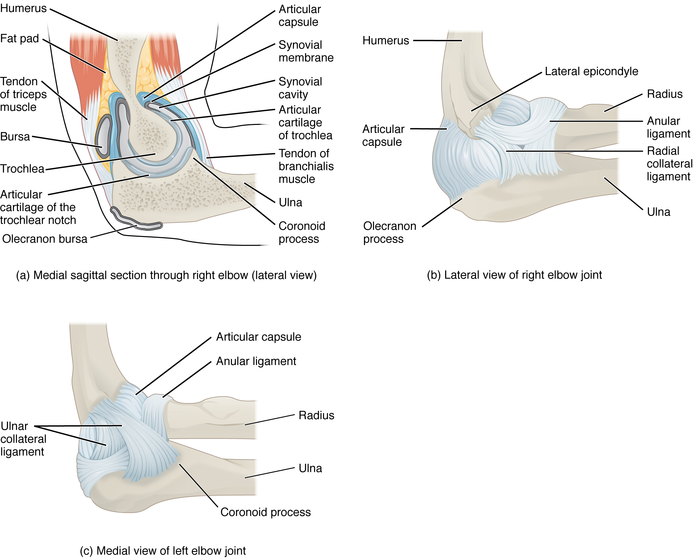
Watch this animation to learn more about the anatomy of the elbow joint. Which structures provide the main stability for the elbow?
Watch this video to learn more about the anatomy of the elbow joint, including bones, joints, muscles, nerves, and blood vessels. What are the functions of the articular cartilage?
The hip joint is a multiaxial ball-and-socket joint between the head of the femur and the acetabulum of the hip bone (Figure \(\PageIndex{5}\) ). The hip carries the weight of the body and thus requires strength and stability during standing and walking. For these reasons, its range of motion is more limited than at the shoulder joint.
The acetabulum is the socket portion of the hip joint. This space is deep and has a large articulation area for the femoral head, thus giving stability and weight bearing ability to the joint. The acetabulum is further deepened by theacetabular labrum, a fibrocartilage lip attached to the outer margin of the acetabulum. The surrounding articular capsule is strong, with several thickened areas forming intrinsic ligaments. These ligaments arise from the hip bone, at the margins of the acetabulum, and attach to the femur at the base of the neck. The ligaments are theiliofemoral ligament,pubofemoral ligament, andischiofemoral ligament, all of which spiral around the head and neck of the femur. The ligaments are tightened by extension at the hip, thus pulling the head of the femur tightly into the acetabulum when in the upright, standing position. Very little additional extension of the thigh is permitted beyond this vertical position. These ligaments thus stabilize the hip joint and allow you to maintain an upright standing position with only minimal muscle contraction. Inside of the articular capsule, theligament of the head of the femur(ligamentum teres) spans between the acetabulum and femoral head. This intracapsular ligament is normally slack and does not provide any significant joint support, but it does provide a pathway for an important artery that supplies the head of the femur.
The hip is prone to osteoarthritis, and thus was the first joint for which a replacement prosthesis was developed. A common injury in elderly individuals, particularly those with weakened bones due to osteoporosis, is a “broken hip,” which is actually a fracture of the femoral neck. This may result from a fall, or it may cause the fall. This can happen as one lower limb is taking a step and all of the body weight is placed on the other limb, causing the femoral neck to break and producing a fall. Any accompanying disruption of the blood supply to the femoral neck or head can lead to necrosis of these areas, resulting in bone and cartilage death. Femoral fractures usually require surgical treatment, after which the patient will need mobility assistance for a prolonged period, either from family members or in a long-term care facility. Consequentially, the associated health care costs of “broken hips” are substantial. In addition, hip fractures are associated with increased rates of morbidity (incidences of disease) and mortality (death). Surgery for a hip fracture followed by prolonged bed rest may lead to life-threatening complications, including pneumonia, infection of pressure ulcers (bedsores), and thrombophlebitis (deep vein thrombosis; blood clot formation) that can result in a pulmonary embolism (blood clot within the lung).
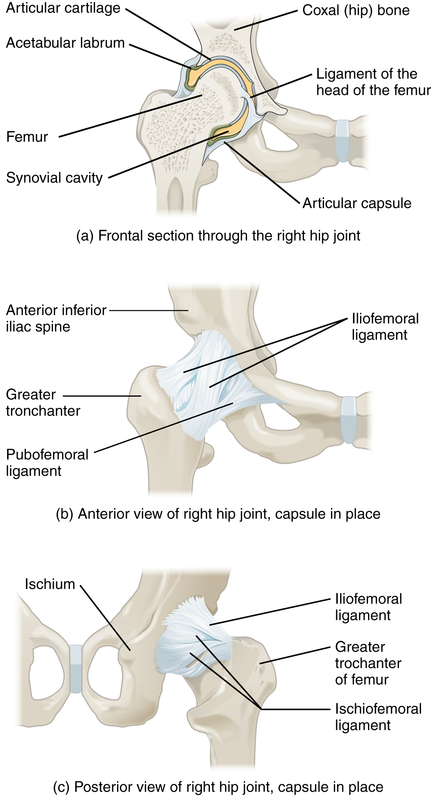
Watch this video for a tutorial on the anatomy of the hip joint. What is a possible consequence following a fracture of the femoral neck within the capsule of the hip joint?
Watch this video to learn more about the anatomy of the hip joint, including bones, joints, muscles, nerves, and blood vessels. Where is the articular cartilage thickest within the hip joint?
The knee joint is the largest joint of the body (Figure \(\PageIndex{6}\) ). It actually consists of three articulations. Thefemoropatellar jointis found between the patella and the distal femur. Themedial tibiofemoral jointandlateral tibiofemoral jointare located between the medial and lateral condyles of the femur and the medial and lateral condyles of the tibia. All of these articulations are enclosed within a single articular capsule. The knee functions as a hinge joint, allowing flexion and extension of the leg. This action is generated by both rolling and gliding motions of the femur on the tibia. In addition, some rotation of the leg is available when the knee is flexed, but not when extended. The knee is well constructed for weight bearing in its extended position, but is vulnerable to injuries associated with hyperextension, twisting, or blows to the medial or lateral side of the joint, particularly while weight bearing.
At the femoropatellar joint, the patella slides vertically within a groove on the distal femur. The patella is a sesamoid bone incorporated into the tendon of the quadriceps femoris muscle, the large muscle of the anterior thigh. The patella serves to protect the quadriceps tendon from friction against the distal femur. Continuing from the patella to the anterior tibia just below the knee is thepatellar ligament. Acting via the patella and patellar ligament, the quadriceps femoris is a powerful muscle that acts to extend the leg at the knee. It also serves as a “dynamic ligament” to provide very important support and stabilization for the knee joint.
The medial and lateral tibiofemoral joints are the articulations between the rounded condyles of the femur and the relatively flat condyles of the tibia. During flexion and extension motions, the condyles of the femur both roll and glide over the surfaces of the tibia. The rolling action produces flexion or extension, while the gliding action serves to maintain the femoral condyles centered over the tibial condyles, thus ensuring maximal bony, weight-bearing support for the femur in all knee positions. As the knee comes into full extension, the femur undergoes a slight medial rotation in relation to tibia. The rotation results because the lateral condyle of the femur is slightly smaller than the medial condyle. Thus, the lateral condyle finishes its rolling motion first, followed by the medial condyle. The resulting small medial rotation of the femur serves to “lock” the knee into its fully extended and most stable position. Flexion of the knee is initiated by a slight lateral rotation of the femur on the tibia, which “unlocks” the knee. This lateral rotation motion is produced by the popliteus muscle of the posterior leg.
Located between the articulating surfaces of the femur and tibia are two articular discs, themedial meniscusandlateral meniscus(see Figure \(\PageIndex{6}\)b). Each is a C-shaped fibrocartilage structure that is thin along its inside margin and thick along the outer margin. They are attached to their tibial condyles, but do not attach to the femur. While both menisci are free to move during knee motions, the medial meniscus shows less movement because it is anchored at its outer margin to the articular capsule and tibial collateral ligament. The menisci provide padding between the bones and help to fill the gap between the round femoral condyles and flattened tibial condyles. Some areas of each meniscus lack an arterial blood supply and thus these areas heal poorly if damaged.
The knee joint has multiple ligaments that provide support, particularly in the extended position (see Figure 9.19c). Outside of the articular capsule, located at the sides of the knee, are two extrinsic ligaments. Thefibular collateral ligament(lateral collateral ligament) is on the lateral side and spans from the lateral epicondyle of the femur to the head of the fibula. Thetibial collateral ligament(medial collateral ligament) of the medial knee runs from the medial epicondyle of the femur to the medial tibia. As it crosses the knee, the tibial collateral ligament is firmly attached on its deep side to the articular capsule and to the medial meniscus, an important factor when considering knee injuries. In the fully extended knee position, both collateral ligaments are taut (tight), thus serving to stabilize and support the extended knee and preventing side-to-side or rotational motions between the femur and tibia.
The articular capsule of the posterior knee is thickened by intrinsic ligaments that help to resist knee hyperextension. Inside the knee are two intracapsular ligaments, theanterior cruciate ligamentandposterior cruciate ligament. These ligaments are anchored inferiorly to the tibia at the intercondylar eminence, the roughened area between the tibial condyles. The cruciate ligaments are named for whether they are attached anteriorly or posteriorly to this tibial region. Each ligament runs diagonally upward to attach to the inner aspect of a femoral condyle. The cruciate ligaments are named for the X-shape formed as they pass each other (cruciate means “cross”). The posterior cruciate ligament is the stronger ligament. It serves to support the knee when it is flexed and weight bearing, as when walking downhill. In this position, the posterior cruciate ligament prevents the femur from sliding anteriorly off the top of the tibia. The anterior cruciate ligament becomes tight when the knee is extended, and thus resists hyperextension.
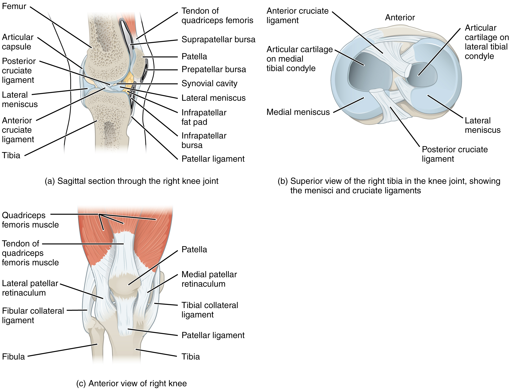
Watch this video to learn more about the flexion and extension of the knee, as the femur both rolls and glides on the tibia to maintain stable contact between the bones in all knee positions. The patella glides along a groove on the anterior side of the distal femur. The collateral ligaments on the sides of the knee become tight in the fully extended position to help stabilize the knee. The posterior cruciate ligament supports the knee when flexed and the anterior cruciate ligament becomes tight when the knee comes into full extension to resist hyperextension. What are the ligaments that support the knee joint?
Watch this video to learn more about the anatomy of the knee joint, including bones, joints, muscles, nerves, and blood vessels. Which ligament of the knee keeps the tibia from sliding too far forward in relation to the femur and which ligament keeps the tibia from sliding too far backward?
Injuries to the knee are common. Since this joint is primarily supported by muscles and ligaments, injuries to any of these structures will result in pain or knee instability. Injury to the posterior cruciate ligament occurs when the knee is flexed and the tibia is driven posteriorly, such as falling and landing on the tibial tuberosity or hitting the tibia on the dashboard when not wearing a seatbelt during an automobile accident. More commonly, injuries occur when forces are applied to the extended knee, particularly when the foot is planted and unable to move. Anterior cruciate ligament injuries can result with a forceful blow to the anterior knee, producing hyperextension, or when a runner makes a quick change of direction that produces both twisting and hyperextension of the knee.
A worse combination of injuries can occur with a hit to the lateral side of the extended knee (Figure \(\PageIndex{7}\)). A moderate blow to the lateral knee will cause the medial side of the joint to open, resulting in stretching or damage to the tibial collateral ligament. Because the medial meniscus is attached to the tibial collateral ligament, a stronger blow can tear the ligament and also damage the medial meniscus. This is one reason that the medial meniscus is 20 times more likely to be injured than the lateral meniscus. A powerful blow to the lateral knee produces a “terrible triad” injury, in which there is a sequential injury to the tibial collateral ligament, medial meniscus, and anterior cruciate ligament.
Arthroscopic surgery has greatly improved the surgical treatment of knee injuries and reduced subsequent recovery times. This procedure involves a small incision and the insertion into the joint of an arthroscope, a pencil-thin instrument that allows for visualization of the joint interior. Small surgical instruments are also inserted via additional incisions. These tools allow a surgeon to remove or repair a torn meniscus or to reconstruct a ruptured cruciate ligament. The current method for anterior cruciate ligament replacement involves using a portion of the patellar ligament. Holes are drilled into the cruciate ligament attachment points on the tibia and femur, and the patellar ligament graft, with small areas of attached bone still intact at each end, is inserted into these holes. The bone-to-bone sites at each end of the graft heal rapidly and strongly, thus enabling a rapid recovery.
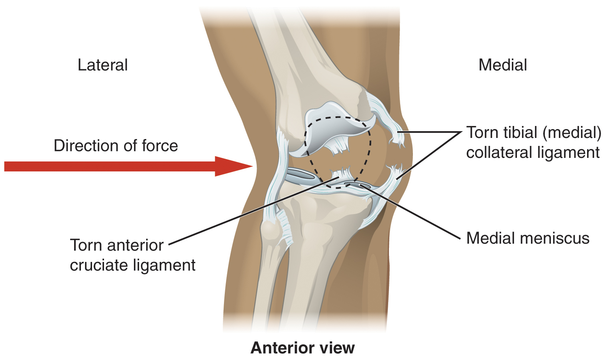
Watch this video to learn more about different knee injuries and diagnostic testing of the knee. What are the most common causes of anterior cruciate ligament injury?
The ankle is formed by thetalocrural joint(Figure \(\PageIndex{8}\)). It consists of the articulations between the talus bone of the foot and the distal ends of the tibia and fibula of the leg (crural = “leg”). The superior aspect of the talus bone is square-shaped and has three areas of articulation. The top of the talus articulates with the inferior tibia. This is the portion of the ankle joint that carries the body weight between the leg and foot. The sides of the talus are firmly held in position by the articulations with the medial malleolus of the tibia and the lateral malleolus of the fibula, which prevent any side-to-side motion of the talus. The ankle is thus a uniaxial hinge joint that allows only for dorsiflexion and plantar flexion of the foot.
Additional joints between the tarsal bones of the posterior foot allow for the movements of foot inversion and eversion. Most important for these movements is thesubtalar joint, located between the talus and calcaneus bones. The joints between the talus and navicular bones and the calcaneus and cuboid bones are also important contributors to these movements. All of the joints between tarsal bones are plane joints. Together, the small motions that take place at these joints all contribute to the production of inversion and eversion foot motions.
Like the hinge joints of the elbow and knee, the talocrural joint of the ankle is supported by several strong ligaments located on the sides of the joint. These ligaments extend from the medial malleolus of the tibia or lateral malleolus of the fibula and anchor to the talus and calcaneus bones. Since they are located on the sides of the ankle joint, they allow for dorsiflexion and plantar flexion of the foot. They also prevent abnormal side-to-side and twisting movements of the talus and calcaneus bones during eversion and inversion of the foot. On the medial side is the broaddeltoid ligament. The deltoid ligament supports the ankle joint and also resists excessive eversion of the foot. The lateral side of the ankle has several smaller ligaments. These include theanterior talofibular ligamentand theposterior talofibular ligament, both of which span between the talus bone and the lateral malleolus of the fibula, and thecalcaneofibular ligament, located between the calcaneus bone and fibula. These ligaments support the ankle and also resist excess inversion of the foot.
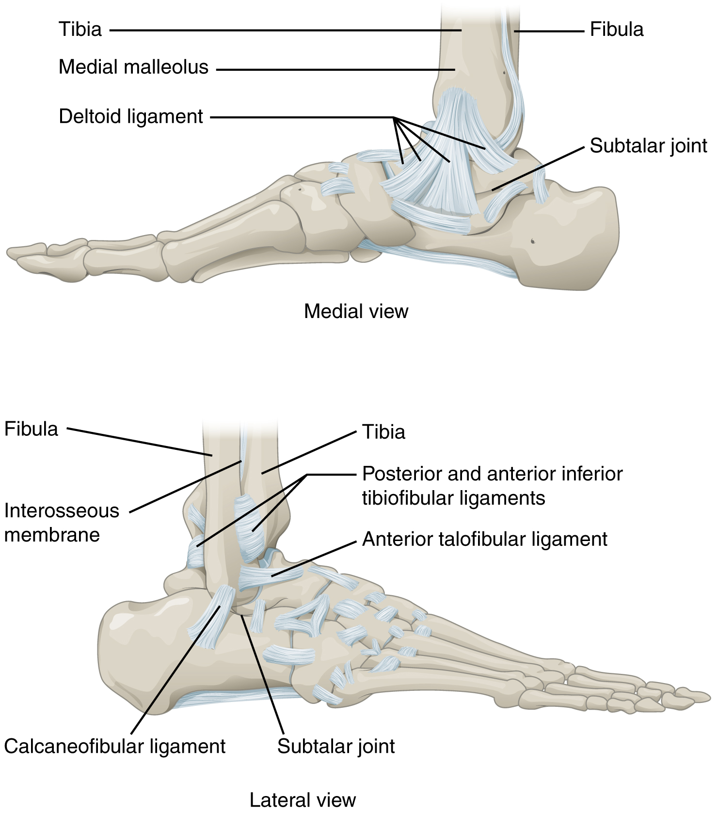
Watch this video for a tutorial on the anatomy of the ankle joint. What are the three ligaments found on the lateral side of the ankle joint?
Watch this video to learn more about the anatomy of the ankle joint, including bones, joints, muscles, nerves, and blood vessels. Which type of joint used in woodworking does the ankle joint resemble?
The ankle is the most frequently injured joint in the body, with the most common injury being an inversion ankle sprain. A sprain is the stretching or tearing of the supporting ligaments. Excess inversion causes the talus bone to tilt laterally, thus damaging the ligaments on the lateral side of the ankle. The anterior talofibular ligament is most commonly injured, followed by the calcaneofibular ligament. In severe inversion injuries, the forceful lateral movement of the talus not only ruptures the lateral ankle ligaments, but also fractures the distal fibula.
Less common are eversion sprains of the ankle, which involve stretching of the deltoid ligament on the medial side of the ankle. Forcible eversion of the foot, for example, with an awkward landing from a jump or when a football player has a foot planted and is hit on the lateral ankle, can result in a Pott’s fracture and dislocation of the ankle joint. In this injury, the very strong deltoid ligament does not tear, but instead shears off the medial malleolus of the tibia. This frees the talus, which moves laterally and fractures the distal fibula. In extreme cases, the posterior margin of the tibia may also be sheared off.
Above the ankle, the distal ends of the tibia and fibula are united by a strong syndesmosis formed by the interosseous membrane and ligaments at the distal tibiofibular joint. These connections prevent separation between the distal ends of the tibia and fibula and maintain the talus locked into position between the medial malleolus and lateral malleolus. Injuries that produce a lateral twisting of the leg on top of the planted foot can result in stretching or tearing of the tibiofibular ligaments, producing a syndesmotic ankle sprain or “high ankle sprain.”
Most ankle sprains can be treated using the RICE technique: Rest, Ice, Compression, and Elevation. Reducing joint mobility using a brace or cast may be required for a period of time. More severe injuries involving ligament tears or bone fractures may require surgery.
Watch this video to learn more about the ligaments of the ankle joint, ankle sprains, and treatment. During an inversion ankle sprain injury, all three ligaments that resist excessive inversion of the foot may be injured. What is the sequence in which these three ligaments are injured?
📖 OpenStax Anatomy & Physiology 2e, Section 9.7. openstax.org · CC BY 4.0
- Describe the two processes by which mesenchyme can give rise to bone
- Discuss the process by which joints of the limbs are formed
Joints form during embryonic development in conjunction with the formation and growth of the associated bones. The embryonic tissue that gives rise to all bones, cartilages, and connective tissues of the body is called mesenchyme. In the head, mesenchyme will accumulate at those areas that will become the bones that form the top and sides of the skull. The mesenchyme in these areas will develop directly into bone through the process of intramembranous ossification, in which mesenchymal cells differentiate into bone-producing cells that then generate bone tissue. The mesenchyme between the areas of bone production will become the fibrous connective tissue that fills the spaces between the developing bones. Initially, the connective tissue-filled gaps between the bones are wide, and are called fontanelles. After birth, as the skull bones grow and enlarge, the gaps between them decrease in width and the fontanelles are reduced to suture joints in which the bones are united by a narrow layer of fibrous connective tissue.
The bones that form the base and facial regions of the skull develop through the process of endochondral ossification. In this process, mesenchyme accumulates and differentiates into hyaline cartilage, which forms a model of the future bone. The hyaline cartilage model is then gradually, over a period of many years, displaced by bone. The mesenchyme between these developing bones becomes the fibrous connective tissue of the suture joints between the bones in these regions of the skull.
A similar process of endochondral ossification gives rises to the bones and joints of the limbs. The limbs initially develop as small limb buds that appear on the sides of the embryo around the end of the fourth week of development. Starting during the sixth week, as each limb bud continues to grow and elongate, areas of mesenchyme within the bud begin to differentiate into the hyaline cartilage that will form models for of each of the future bones. The synovial joints will form between the adjacent cartilage models, in an area called thejoint interzone. Cells at the center of this interzone region undergo cell death to form the joint cavity, while surrounding mesenchyme cells will form the articular capsule and supporting ligaments. The process of endochondral ossification, which converts the cartilage models into bone, begins by the twelfth week of embryonic development. At birth, ossification of much of the bone has occurred, but the hyaline cartilage of the epiphyseal plate will remain throughout childhood and adolescence to allow for bone lengthening. Hyaline cartilage is also retained as the articular cartilage that covers the surfaces of the bones at synovial joints.
📖 OpenStax Anatomy & Physiology 2e, Section 9.8. openstax.org · CC BY 4.0
| Section | Title |
|---|---|
| 9.2 | 9.2: Classification of Joints |
| 9.3 | 9.3: Fibrous Joints |
| 9.4 | 9.4: Cartilaginous Joints |
| 9.5 | 9.5: Synovial Joints |
| 9.6 | 9.6: Types of Body Movements |
| 9.7 | 9.7: Anatomy of Selected Synovial Joints |
| 9.8 | 9.8: Development of Joints |